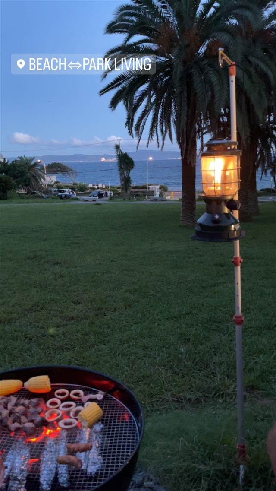
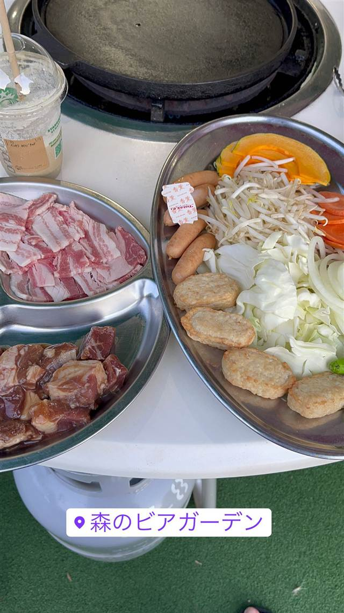
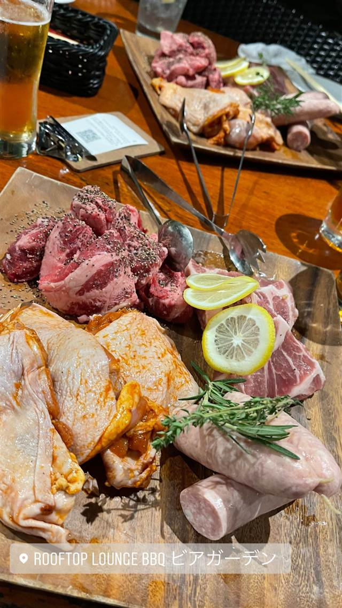
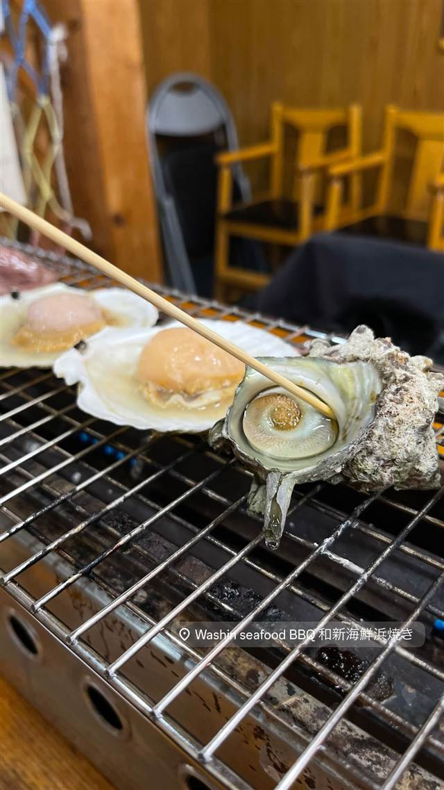
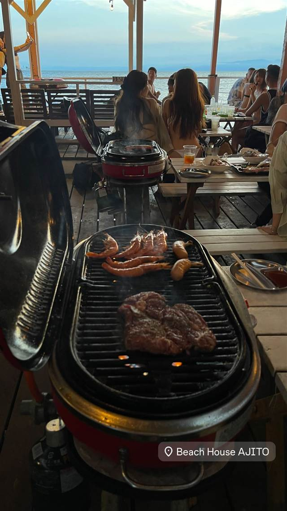

肉料理 · BBQ · 観音崎
BEACH⇔PARK LIVING by THE B'NC
観音崎たたら浜を望む、片付け不要の手ぶらBBQリビング
BEACH⇔PARK LIVING
WHY GO
観音崎公園のたたら浜を望む立地でリビングのようにくつろぎながら海辺BBQができる
観音崎公園のたたら浜を望む一角にある、2024年にリニューアルした手ぶらBBQ＆カフェ施設。県立公園のP-PFI事業として整備され、リビングでくつろぐような感覚で海辺のBBQを楽しめる。
TRIVIA
豆知識
- 県立公園内のP-PFI（公募設置管理制度）事業として整備された施設
- 手ぶらでBBQができ、後片付けまでスタッフが担当してくれる
REVIEWS
世間の評判
3.04食べログ
開放的なロケーションと夏の暑さ
- 海を望むリビングのような開放感を評価する声が多い
- 手ぶらでBBQ道具が揃っている利便性を評価する人がいる
- 夏場は日陰や冷房がなく暑さがつらいという指摘がある
- 野菜が焼けないなど調理面に改善の余地があるという声もある
食べログ
| 創業 | 2024年4月1日「BEACH⇔PARK LIVING by THE B'NC」としてリニューアルオープン |
|---|---|
| 系譜 | 県立観音崎公園のP-PFI事業として整備された施設。運営共同事業体の代表企業はパシフィックコンサルタンツ、構成企業は横浜緑地、運営事業者はシーサイドクリエイションズ。 |
| 看板 | 手ぶらBBQ、海を望むテラス席 |
| こだわり | 観音崎たたら浜を望む立地で、オーシャンビュー席・ソファ席・ファミリー席・パーティー席など多彩なサイトを用意。器材の設営・片付け・ゴミ処理までスタッフが対応する手ぶらBBQ。 |
| どこから | 東京から1時間ほど |
| 場所 | 京急線 馬堀海岸駅（バス利用） 神奈川県横須賀市鴨居4丁目 観音崎公園内 |
| メモ | 京急馬堀海岸駅からバス、観音崎公園内。団体人数の下限撤廃など料金プランを多様化してリニューアル。 |
食べたもの：BBQと海辺の風景
NEARBY
近い店・同じ系統の店
-

BBQ 信濃町駅・千駄ヶ谷駅 森のビアガーデン（明治神宮外苑） 明治神宮外苑の緑に囲まれた空間で1984年から続く都内最大級のビアガーデン 夜 ¥6,000～¥7,999 -

BBQ 六本木一丁目 ARK HILLS SOUTH TOWER ROOFTOP LOUNGE～六本木BBQビアガーデン～ 地上約100メートルの屋上で六本木の夜景を眺めながら手ぶらでバーベキュー -

BBQ 木更津駅 海鮮浜焼き 和新 夜 ¥3,000～¥3,999 -

BBQ 片瀬江ノ島駅 Beach House AJITO(ビーチハウスアジト) 片瀬海岸のオーシャンビューで楽しむ手ぶらBBQ -
 BBQ 六本木駅
BUTTER PIT PLACE
系列焼肉店の国産和牛を、白いソファでくつろぎながら炭火焼き
夜 ¥6,000～¥7,999
BBQ 六本木駅
BUTTER PIT PLACE
系列焼肉店の国産和牛を、白いソファでくつろぎながら炭火焼き
夜 ¥6,000～¥7,999